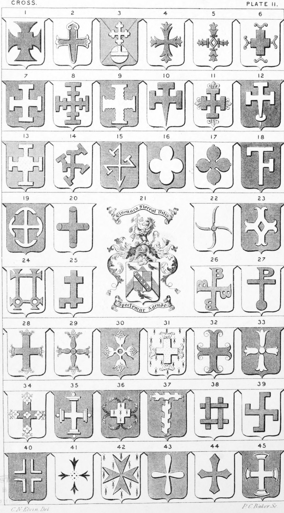

Plate 11.

Plate 11.
- Cross Pattée quadrat in the centre, this is also called the Cross of St. Cuthbert
- Cross of St. James
- Cross of Athelstan, or Athelstone's Cross, i.e. on a mound, a cross botonnee
- Cross Double triparted
- Cross Double Avellaney, or a cross mascle fruitagee
- Cross Fer-de-fourchette
- Cross Potent, or Potence also termed a Cross Baton, or Batune
- Cross Potent crossed, or a cross gemelle
- Cross Potent engrailed
- Cross Potent fitchee
- Cross Potent Flory
- Cross Potent pomelled and fitchee at foot
- Cross Potent quadrat in the centre
- Cross Potent, repotent
- Cross Hamecon barbed at foot
- Cross of Four pomels
- Cross Caterfoil, or Cross Quatrefoil
- Cross Potence of Saxon F. this is also termed Digamma
- Cross with demi annulets inverted, or a cross demi anuled inverted
- Cross Snagg
- Arms of an Heiress or Co.-Heiress when married ; the husband bear her arms in an Escutcheon of Pretence, as here shown. Arms in Pretence, quarterly or and gu. on a bend sa. five bezants. Stebbing
- Cross of Four pruning hooks contrary embowed, by some called four coulters joined to a ball or bullet
- Cross Fer-de-moline, pierced lozengy, or a cross moline nowy lozengy pierced
- Cross Patriarchal pattee conjoined and annuiated in the middle of the bottoms, or in the middle of the bottom cross. Also blazoned as two patriarchal crosses pattee conjoined and both annulated in the centre of the lower cross beam
- Cross Lambeaux rebated
- Cross on each stem the Saxon B
- Cross Long, or Long Cross on Ball and top like the Roman P
- Cross Coronated, or Coronetté
- Cross Banister, or four banister-staves fixed crosswise to a roundle, each crowned at the ends
- Cross Fruitagée
- Cross Catoosed
- Cross Moline invertant, Cercelee, or Sarcelée
- Cross Avelane, or avellane
- Cross with Caterfoils and trefoils
- Cross grady pomelled
- Cross Couped, anserated, or gringolee. See Decorated
- Cross Long, or Long Cross raguled
- Cross of four batunes fretted
- Cross Potent rebated, also termed a Cross Cramponne ; a Fylfot, or Gammadion
- Cross Recercellee voided
- Cross of Ermine, or Four Ermine-spots in cross, heads in fesse point
- Cross of Malta, or Cross of St. John of Jerusalem. See also P. 23, fig. 21
- Cross Pendall, or Spindle
- Cross Clechee properly means voided, but this cross is by some termed a cross clechee
- Cross Capital, or Cornished